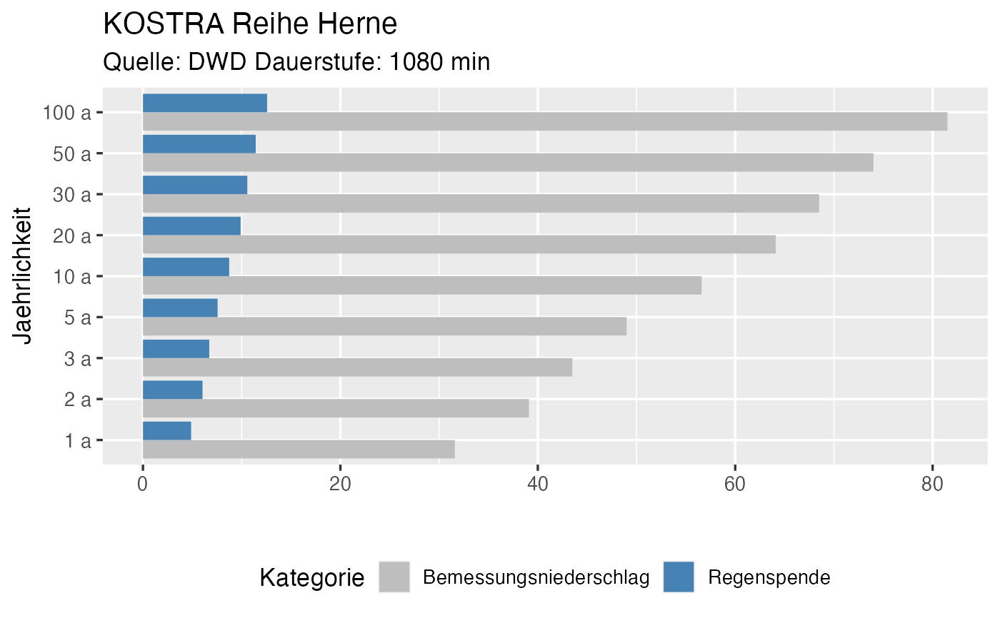

Get KOSTRA rain characteristics
get_KOSTRA(coord_vector, duration_string, location_name = NULL, plot = TRUE)
Arguments
| coord_vector | coordinates in ETRS89. See Datails for more information. |
|---|---|
| duration_string | Duration of precipitation in minutes |
| location_name | used for plot title. Default is NULL |
| plot | boolean (TRUE for plotting or FALSE if plotting is not required) |
Value
A list with elements "plot" and "data" (numeric results) and also produce a ggplot2 plot if parameter plot = TRUE)
Details
The KOSTRA Data is available for a grid of x x x km. The location is given in coordinates in the ETRS89 system (For information see: https://epsg.io/3034) Longitudes and Lattidudes in WGS84 can be converted into ETRS89 here: https://epsg.io/transform#s_srs=4326&t_srs=3034
Examples
# Example default values Herne herne <- r2q::get_KOSTRA(coord_vector = c(3813634.44, 2753912.5), duration_string = 1080, location_name = "Herne")#> Reading layer `StatRR_KOSTRA-DWD-2010R_D1080' from data source #> `/Users/runner/work/_temp/Library/r2q/extdata/KOSTRA/GIS_KOSTRA-DWD-2010R_D1080' #> using driver `ESRI Shapefile' #> Simple feature collection with 8453 features and 10 fields #> Geometry type: POLYGON #> Dimension: XY #> Bounding box: xmin: 3710675 ymin: 2271848 xmax: 4354525 ymax: 3149248 #> Projected CRS: ETRS89-extended / LCC Europeherne$plotherne$data#> Jaehrlichkeit Kategorie Wert Unit #> 1 1 a Bemessungsniederschlag 31.600000 mm #> 2 2 a Bemessungsniederschlag 39.100000 mm #> 3 3 a Bemessungsniederschlag 43.500000 mm #> 4 5 a Bemessungsniederschlag 49.000000 mm #> 5 10 a Bemessungsniederschlag 56.600000 mm #> 6 20 a Bemessungsniederschlag 64.100000 mm #> 7 30 a Bemessungsniederschlag 68.500000 mm #> 8 50 a Bemessungsniederschlag 74.000000 mm #> 9 100 a Bemessungsniederschlag 81.500000 mm #> 10 1 a Regenspende 4.876543 L/(s*ha) #> 11 2 a Regenspende 6.033951 L/(s*ha) #> 12 3 a Regenspende 6.712963 L/(s*ha) #> 13 5 a Regenspende 7.561728 L/(s*ha) #> 14 10 a Regenspende 8.734568 L/(s*ha) #> 15 20 a Regenspende 9.891975 L/(s*ha) #> 16 30 a Regenspende 10.570988 L/(s*ha) #> 17 50 a Regenspende 11.419753 L/(s*ha) #> 18 100 a Regenspende 12.577160 L/(s*ha)# Example 10 min for Berlin berlin <- get_KOSTRA(coord_vector = c(4217676.98, 2862423.69), duration_string = 10, location_name = "Berlin", plot = TRUE)#> Reading layer `StatRR_KOSTRA-DWD-2010R_D0010' from data source #> `/Users/runner/work/_temp/Library/r2q/extdata/KOSTRA/GIS_KOSTRA-DWD-2010R_D0010' #> using driver `ESRI Shapefile' #> Simple feature collection with 8453 features and 10 fields #> Geometry type: POLYGON #> Dimension: XY #> Bounding box: xmin: 3710675 ymin: 2271848 xmax: 4354525 ymax: 3149248 #> Projected CRS: ETRS89-extended / LCC Europeberlin$plotberlin$data#> Jaehrlichkeit Kategorie Wert Unit #> 1 1 a Bemessungsniederschlag 8.7000 mm #> 2 2 a Bemessungsniederschlag 10.9000 mm #> 3 3 a Bemessungsniederschlag 12.2000 mm #> 4 5 a Bemessungsniederschlag 13.9000 mm #> 5 10 a Bemessungsniederschlag 16.2000 mm #> 6 20 a Bemessungsniederschlag 18.4000 mm #> 7 30 a Bemessungsniederschlag 19.7000 mm #> 8 50 a Bemessungsniederschlag 21.4000 mm #> 9 100 a Bemessungsniederschlag 23.6000 mm #> 10 1 a Regenspende 145.0000 L/(s*ha) #> 11 2 a Regenspende 181.6667 L/(s*ha) #> 12 3 a Regenspende 203.3333 L/(s*ha) #> 13 5 a Regenspende 231.6667 L/(s*ha) #> 14 10 a Regenspende 270.0000 L/(s*ha) #> 15 20 a Regenspende 306.6667 L/(s*ha) #> 16 30 a Regenspende 328.3333 L/(s*ha) #> 17 50 a Regenspende 356.6667 L/(s*ha) #> 18 100 a Regenspende 393.3333 L/(s*ha)